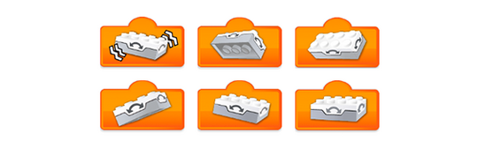

Kenmerken van het model
De leerlingen bouwen een joystick met kantelsensor. De kantelsensor detecteert de positie waarin de joystick is gekanteld. Deze posities worden “modi” genoemd. De leerlingen kunnen voor elk van deze modi een verschillende output programmeren, zoals een geluid afspelen of een kleur weergeven.
Een joystick bouwen met kantelsensor
De kantelsensor kan veranderingen in zes verschillende modi detecteren:
-
De andere kant op kantelen
-
Deze kant op kantelen
-
Omhoog kantelen
-
Naar beneden kantelen
-
Niet kantelen
-
Schudden
In het eerste deel van het project gebruiken de leerlingen drie modi:
-
Omhoog kantelen, voor het korte geluid van de morsecode
-
Naar beneden kantelen, voor het lange geluid van de morsecode
-
Niet kantelen, voor geen geluid
In het tweede deel van het project kunnen de leerlingen alle zes de modi gebruiken.
